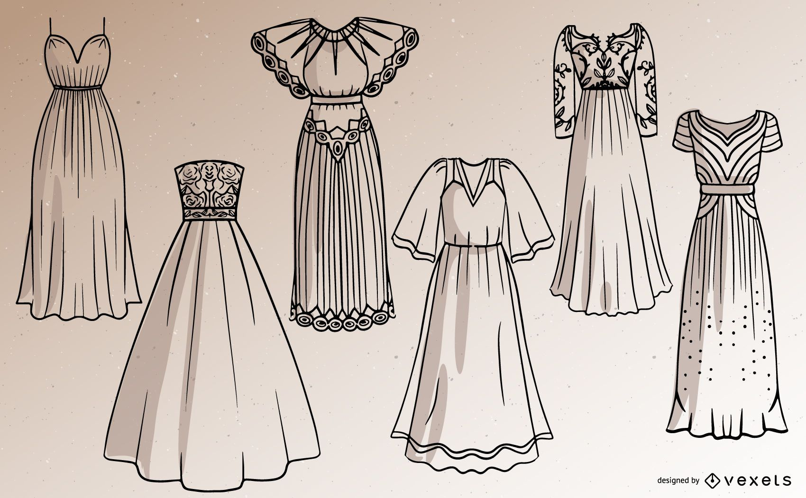

ABOUT
Hi! My name is Pratiksha Doke from Java Fullstack Developer 5732 batch,Edubridge,India.The classes are designed to help beginners to comfortably start sewing your own clothes. With our free tutorials you can learn from using the sewing machine to completion of a garment. Also learn making bolero jacket with invisible seams, salwar pants, attaching zipper, plackets and many more. There are classes on tips and tricks of sewing which would help you to sew in an easy and professional way.
